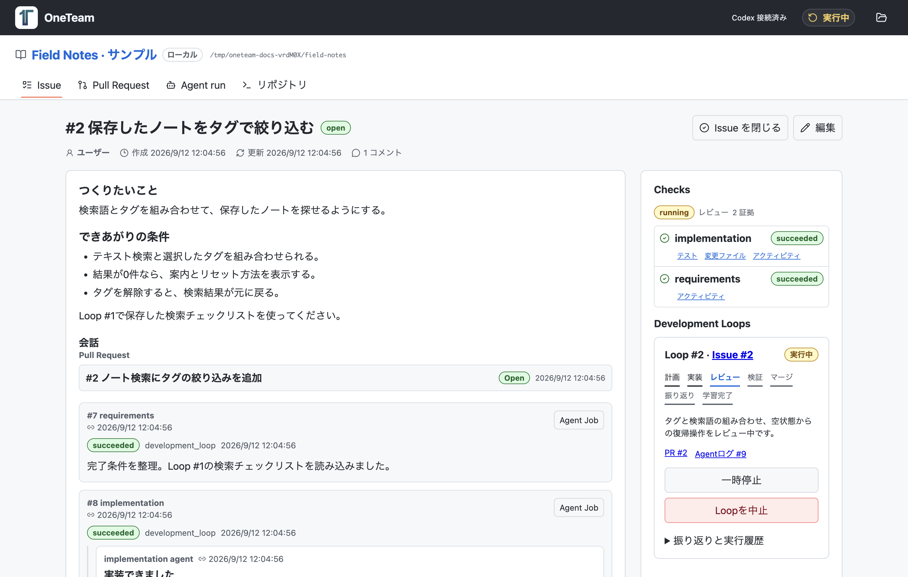
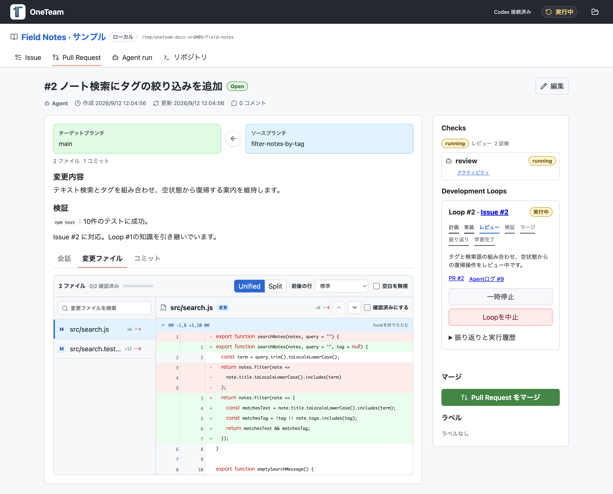
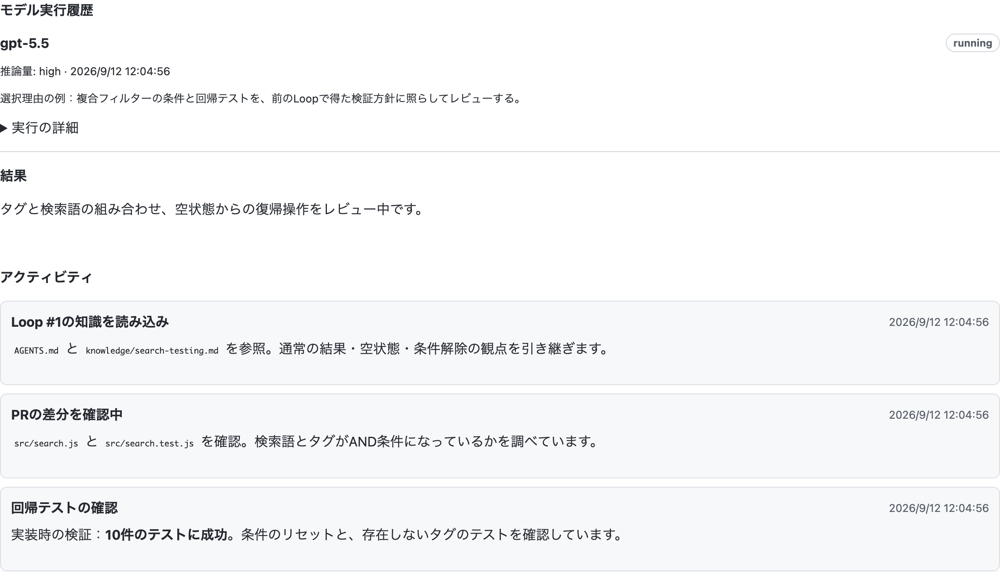
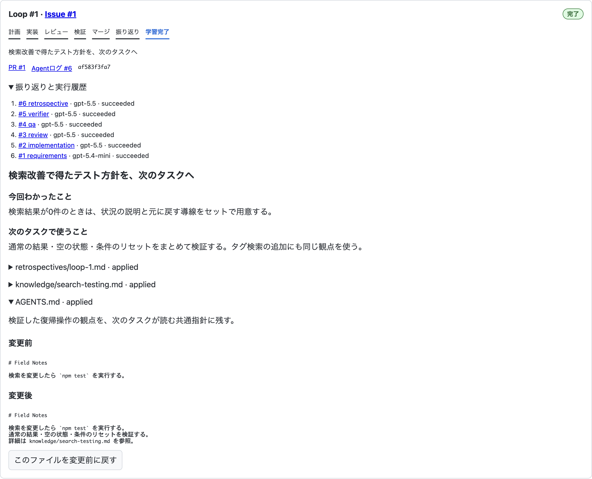

いつもの開発の延長で。
Issue、PR、コメント、ファイルの差分、行ごとのレビュー。コードと開発の履歴を、手元のワークスペースでまとめて扱えます。
IssuesPull RequestsAgentRepository
LOCAL LOOP ENGINEERING · POWERED BY CODEX
Issueを書いたら、Codexが実装・レビュー・マージへ。その振り返りを知識として残し、次のタスクに引き継ぐ。それがOneTeamの開発ループです。
コードと一緒に、プロジェクトの経験も育てよう。
.oneteam/knowledge/testing.md
検索の空状態と、検索条件をリセットする操作もテストする。
開発するのは、ひとりでも。
積み重なる経験は、チームのように。
うまくいった手順も、つまずいた理由も、昨日の会話に置き去りにしない。OneTeamは、その経験をリポジトリに蓄積し、次の開発で使える形に整えます。
INSIDE ONETEAM
サンプルのノートアプリ「Field Notes」で、タグ検索を開発する場面です。前のLoopで得た知識が、次の実装やレビューにつながっている様子を見てみましょう。
タグ検索の依頼に、完了条件、実装結果、関連PR、レビュー中のLoopが揃っています。

変更した検索処理とテストを、ファイルごとのGit差分で確認できます。

Agent詳細の実行履歴とログ。モデルの選択理由、読み込んだ知識、確認中の項目を追えます。

先に完了した検索改善の振り返り。AGENTS.mdに追加された検証方針を、現在のタグ検索タスクが引き継いでいます。

サンプルデータを入れたOneTeamの実画面です。モデル名・実行ログ・進行状態は紹介用の例です。Agentと振り返りは、詳細部分を撮影しています。
01 / THE DEVELOPMENT LOOP
Issue → PR → マージ → 振り返り。学んだことを保存するところまでを、ひとつのLoopとして扱います。
変えたいことと、できあがりの条件をIssueに。Codexが要件を整理し、タスクに取りかかります。
ブランチで実装してPRを作成。レビュー・修正・テストを進めます。差分や実行ログはいつでも確認できます。
レビューと検証を通過すると、自動でマージ。質問や確認が必要なとき、検証に失敗したときは、理由を残して停止します。
Codexが作業を振り返り、役立つ知識を.oneteam/以下に更新。次のIssueがその知識を受け取ります。
Loopはひとつずつ。前の学びを保存してから、次のタスクをはじめます。
02 / KNOWLEDGE THAT STAYS
どの手順がうまくいったか。なぜ修正が必要だったか。どんな検証が役立ったか。振り返りから、このプロジェクトで使える指針をつくります。
知識はMarkdownとして新規作成・修正・整理。次のタスクは共通の指針と関連する知識を読み込み、使った版もログに記録します。
進み具合も、学んだことも見える− 検索結果が表示されることを確認する。
+ 通常の検索結果・空の状態・リセット操作をテストする。
読める、編集できる、次のタスクが使える。
03 / FAMILIAR WORKFLOW. VISIBLE PROGRESS.
使い慣れたIssueとPull Requestで進めながら、Codexの作業、使ったモデル、変更の経緯を追えます。
Issue、PR、コメント、ファイルの差分、行ごとのレビュー。コードと開発の履歴を、手元のワークスペースでまとめて扱えます。
LLMはCodexに一本化。変更の範囲、リスク、過去の試行から利用可能なモデルを選びます。小さな修正には軽量モデル、難しい設計には推論を重視します。
Agentタブに、実行したモデル、選択理由、コマンド、テスト結果を記録。必要に応じてLoopを一時停止・再開・キャンセルできます。
知識の更新も確認できます。振り返りと変更前後の内容を読み、その後にファイルが変更されていなければ、以前の版へ戻すこともできます。
YOUR NEXT ISSUE IS A GOOD PLACE TO START
GitHub ReleasesからmacOS用ファイルを取得。ファイルを開き、OneTeam.appをアプリケーションフォルダへ移して起動します。
フォルダを選択、またはドロップ。.oneteamがなければ初期化し、空のIssue一覧からはじまります。
まずは、改善したいことをひとつ。必要ならCodexにログインし、Loopの進み具合を見てみましょう。
OneTeamのビルドは不要。Codex CLIを同梱したデスクトップアプリを、そのまま使えます。
GitHub ReleasesでダウンロードmacOS、Git、Codexへのログインが必要です。対象プロジェクトのビルド・テスト環境も用意してください。開くGitリポジトリには、最初のコミットを作成しておいてください。
詳しい起動手順A FEW THINGS TO KNOW
必要ありません。手元のGitリポジトリを使います。IssueとPull Requestはローカルで管理し、GitHubへは自動同期しません。
Issue、PR、ログ、知識はローカルに保存します。AIの処理にはCodexを使うため、通信とCodexへのログインが必要です。
不要です。実行はCodexに固定し、利用可能なモデルからタスクに応じて自動選択します。実際に使ったモデルと選択理由はAgentログで確認できます。利用できるモデルはCodexのアカウントによって異なります。
理由を残してLoopが停止します。IssueやPRで質問に回答するか、問題を解決して再開してください。一時停止やキャンセルもできます。後続のIssueは、進行中のLoopが完了またはキャンセルされるまで待機します。
はい。共通の指針は.oneteam/AGENTS.md、詳しい知識は.oneteam/knowledge/以下のMarkdownです。変更履歴が残り、手動編集と競合した場合は適用を止めて確認できます。振り返りの結果、新しく残す知識がない場合もあります。